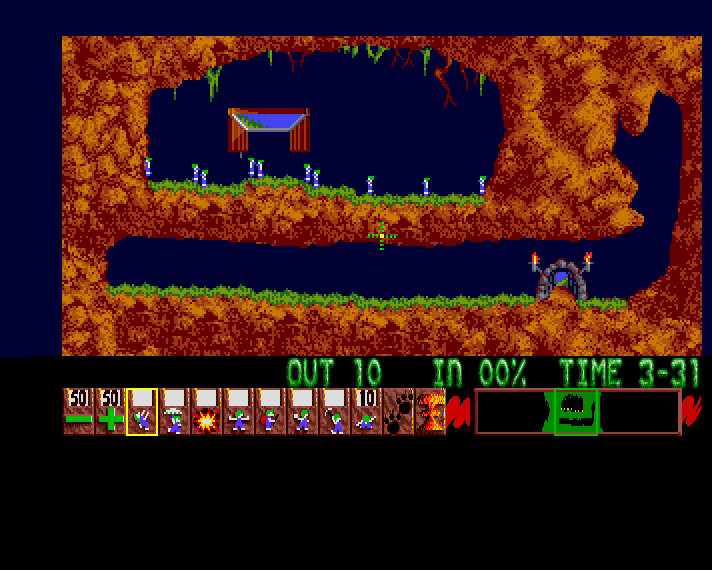
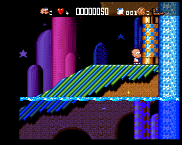
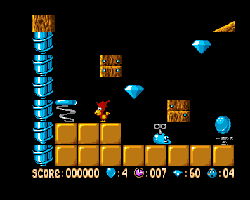
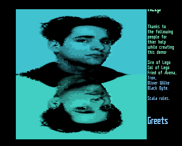

CopperScreen
An open-source Amiga emulator for Windows, macOS and Linux. Boot compatible floppies with the included CopperStart Mini ROM.

Download CopperScreen 1.2.1
The archives include the .NET runtime. Extract the package before launching CopperScreen.
macOS bundles come without Developer ID signing or notarization.
Screenshots
View the gallery

Bubble and Squeak
On the slopes of Stardust Caverns in the AGA version.


Alfred Chicken
Stage 1 in the AGA version after loading Disk 2.


Roots 2.0
The face morph in the credits of Sanity's AGA demo.
Supported hardware
- Amiga models
- PAL Amiga 500, 500+ and 1200
- CPU upgrades
- Optional 68040 JIT on x64 and Arm64 hosts, including Apple Silicon
- Floppy drives
- Up to four DD or HD drives
- Hard disks
- Raw HDF with native Kickstart. Builds from current source also mount fixed and dynamic WinUAE VHDs.
Get started
- Open CopperScreen and select your Amiga model.
- Select Start Amiga and insert a compatible boot floppy when prompted.
For Workbench or a hard disk image, select an original Kickstart ROM using Choose ROM….
CopperDisk
CopperDisk is a .NET 10 Amiga disk-image library with managed SPS/CAPS IPF decoding. It exposes encoded track streams and a best-effort AmigaDOS sector view for emulator hosts and disk tools. A native CAPS library is not required.
Development
CopperScreen is written in C# and uses an Avalonia desktop interface and the Copper68k CPU interpreter. The emulator, disk library, tests and headless runner are open source.
Timing accuracy and compatibility are ongoing work. Some interlaced output remains unstable. A screenshot demonstrates a captured scene, not complete compatibility with that title.